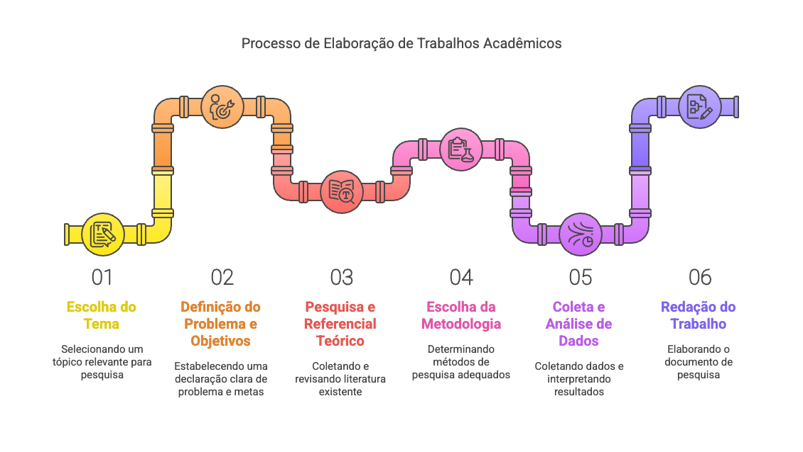
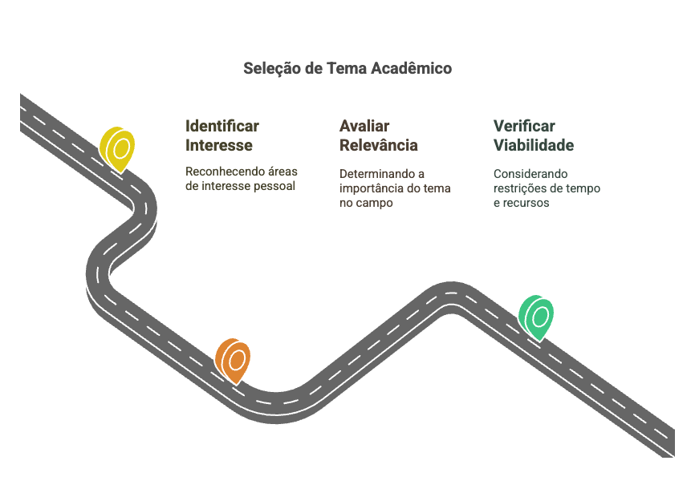
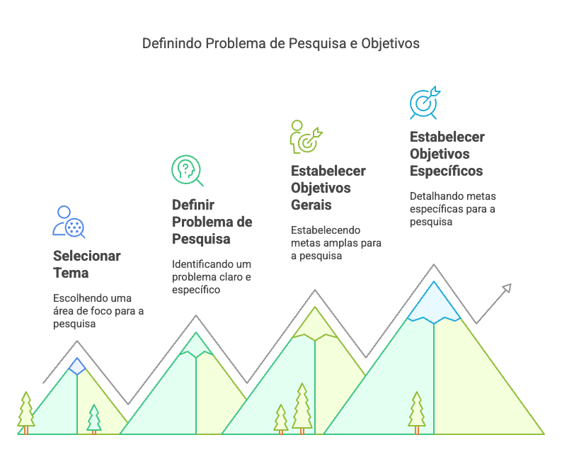
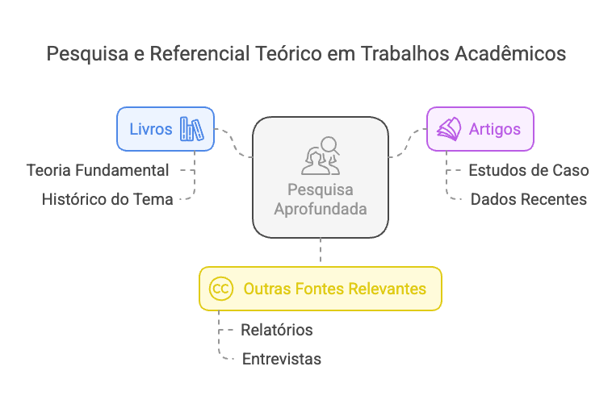
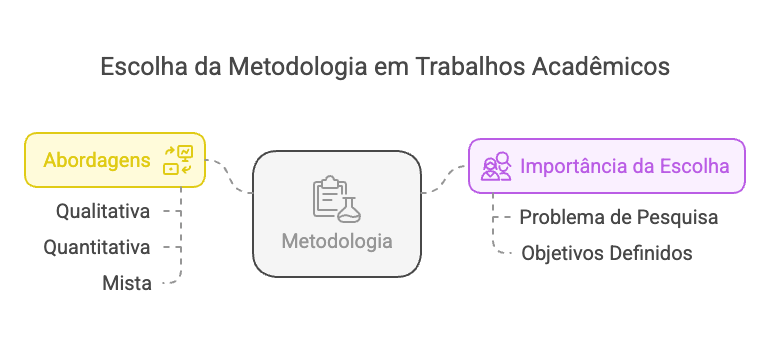

1. Escolha do tema
A escolha do tema é o primeiro e um dos mais importantes passos na elaboração de um trabalho acadêmico.
É fundamental selecionar um assunto que desperte interesse e que tenha relevância na área de estudo.
Além disso, o tema deve ser viável, considerando o tempo e os recursos disponíveis para a pesquisa.

2. Definição do Problema e Objetivos
Após escolher o tema, é necessário definir o problema de pesquisa. O problema deve ser claro e
específico, orientando o desenvolvimento do trabalho. Com base no problema, estabeleça os objetivos, que
podem ser gerais e específicos, direcionando a pesquisa e a análise dos dados.

3. Pesquisa e Referencial Teórico
Nesta etapa, é importante realizar uma pesquisa aprofundada sobre o tema escolhido. O referencial
teórico pode incluir livros para trazer um conceito histórico, porém faça uso de artigos recentes e outras fontes relevantes que fundamentem a pesquisa. Essa base
teórica ajudará a contextualizar o problema e a justificar a importância do estudo.

** Adicione uma tabela comparativa sobre os itens relevantes nos trabalhos indicados **
4. Escolha da Metodologia
A metodologia é o conjunto de métodos e técnicas que serão utilizados para a coleta e análise dos dados.
É essencial escolher uma abordagem que se adeque ao problema de pesquisa e aos objetivos definidos. As
metodologias podem ser qualitativas, quantitativas ou mistas, dependendo da natureza do estudo.

5. Coleta e Análise de Dados
Com a metodologia definida, inicia-se a coleta de dados. Essa etapa pode envolver entrevistas,
questionários, observações ou análise de documentos, entre outros. Após a coleta, os dados devem ser
analisados de acordo com as técnicas escolhidas, permitindo a interpretação dos resultados.
6. Redação do Trabalho (Desde o passo 1)
A redação do trabalho deve seguir uma estrutura lógica e coerente, geralmente composta por introdução,
desenvolvimento e conclusão. É importante que a escrita seja clara e objetiva, respeitando as normas
acadêmicas e a formatação exigida pela instituição.
7. Revisão e Normatização
Após a redação, é fundamental realizar uma revisão cuidadosa do texto, verificando a gramática, a
ortografia e a formatação. A normatização deve seguir as diretrizes da instituição, como ABNT ou APA,
garantindo que o trabalho esteja em conformidade com os padrões acadêmicos.
8. Apresentação e Defesa
Por fim, a apresentação e defesa do trabalho são etapas decisivas. Prepare uma apresentação clara e
concisa, destacando os principais pontos da pesquisa. Esteja preparado para responder a perguntas e
defender suas escolhas e resultados diante da banca examinadora.